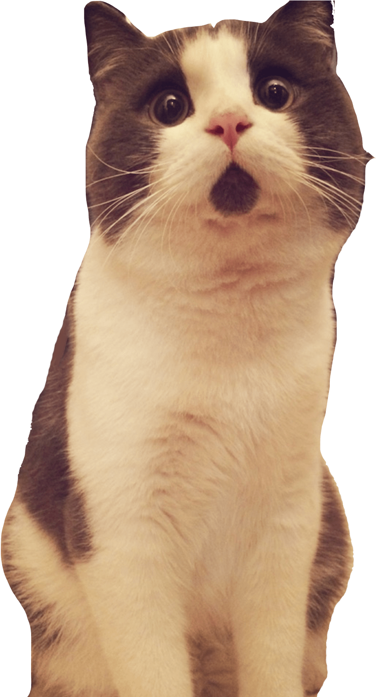

“One cat just leads to another.”
Ernest Hemingway
Ernest Hemingway
Top-10 Most Incredible Cat Records
The oldest cat
Creme Puff is considered the oldest recorded cat. She was born on August 3, 1967, and died on August 6, 2005, having lived for 38 years and 3 days. Incredible age for a cat considering their average age ranges from 10-15 years old. Cream Puff lived with her owner Jake Perry in Texas. Curious, that Jake is the owner of another long-lived cat Granp, who died at the age of 34 years and 2 months.The richest cat
Blackie is considered the richest cat on the planet - his fortune is estimated at 15 million pounds. Blackie was one of 15 cats of the London antiquarian Ben Rhea. In 1988, the eccentric Briton died, leaving behind a very unusual will: “... I will bequeath a thousand pounds to the gardener, two to the driver, two to the plumber, close relatives - nothing and fifteen million to my cat. I appoint the following three feline protection institutes as guardians of cats. 15 million was to be received by the cat that would outlive all its relatives. In the end, it was Blackie.The fattest cat
The fattest cat in history is Himmy from Australia. The weight of this animal was 21.3 kg. Himmi died at the age of ten from pulmonary insufficiency. It is worth noting that the Guinness Book of Records no longer notes such achievements due to fears that this can serve as an incentive for owners to feed their pets.The biggest cat
The largest cat is considered to be a cat named Scarletts Magic breed majestic savannah. The cat got into the Guinness Book of Records at the age of 18 months - its height was 44 centimeters from the shoulder to the toe of the hind paw. His owner Kim Draper hopes that her cat will get into another nomination - as the largest cat when measuring the length from the tip of the nose to the toe of the hind paw.The smallest cat
Kittens are the cutest and most touching creatures in nature, and every child once wanted the animal to always remain as small and funny. Pixel cat is the shortest cat - her height is only 12 cm. Pixel belongs to the Munchkin breed - cats of this breed have short legs. Together with her owner Tiyayani Kjeldergaard, the cat Pixel lives in Portero, California.The cat that gave birth to the largest number of kittens
A cat named Antigone in the 70s of the last century gave birth to 19 kittens! The previous record holder was the Persian cat Bluebell, who gave birth to 14 live kittens. Not all of Antigone's kittens survived, but out of 19 born into the world, 15 turned out to be quite healthy and strong.The longest haired cat
The cat with the longest hair is Colonel Meow. With this achievement, he got into the Guinness Book of Records. The average length of a cat's hair is 23 centimeters. The increased fluffiness of the cat gives a lot of inconvenience to its owners. “His hair is everywhere, it even gets on us; it feels like all I do is I’m cleaning,” said his owner, Ann Marie Evie, who lives in Los Angeles with her boyfriend and pet.The longest cat
The longest cat is a Maine Coon named Stewie. He is also a record holder, registered in the Guinness Book of Records. Its length from tailbone to nose was 123 centimeters.The most expensive cat
Zeus the cat, bred by Esmond Gay, is the most expensive cat in the world. Its cost is €100 thousand. Zeus is 90% Bengal and 10% shorthair hybrid.The most enduring cat
The world record for the tallest fall ever experienced is held by Florida Senator Andy's cat. His owner did not keep track of his pet and the cat fell out of the window of the 16th floor. Having fallen from a height of about 61 meters, the cat remained alive.
